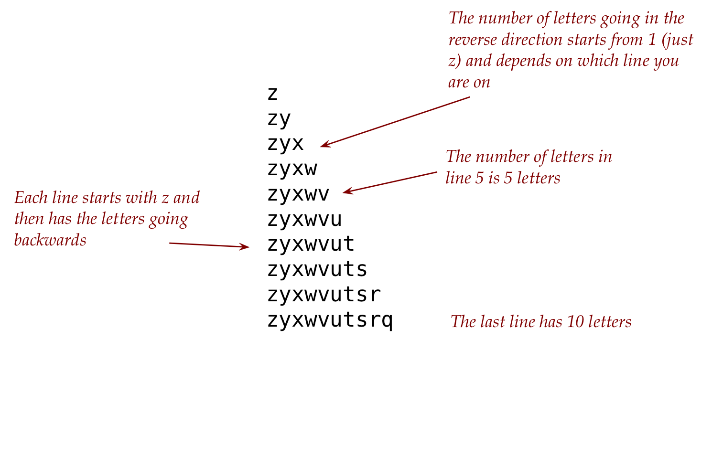
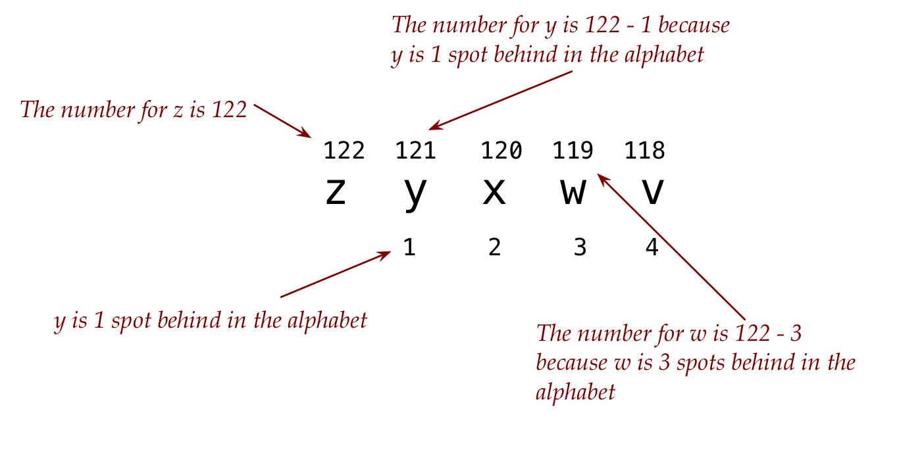

Assignment 2: Problem Solving Example
With a challenging problem, what is often hardest is getting started. Where to begin?
Let’s start by examining the output more closely: 
At this point, it’s important NOT to think about coding details.
This is a critically useful strategy that deserves some explanation:
- The type of thinking you do when solving a problem at the higher level is different from the kind of nitpicky-language-level detail during coding.
- Experience shows that it’s best to avoid doing both simultaneously.
- If you like analogies:
- It’s best to develop an outline of an essay before focusing on sentences.
- Do the prep (chopping, organizing) before the actual cooking.
So now, let’s just think high level but a little code-like:
We call this algorithmic thinking.
Since there are 10 lines, we could say “we’re doing something 10 times” (each time slightly differently).
In code-like structure, called pseudcode:
for i going from 1 to 10 figure out and print the i-th lineIt’s worth staring at the above for a few minutes. We’ll point out that:
- This is NOT actual code but puts structure to the thought “we’re doing something 10 times”
- The high level structure will later become an actual for-loop.
- Pseudocode doesn’t get hung up on language minutiae like semi-colons. All it needs to do is outline the main idea, like a sketch.
Next, if we could somehow figure out the last letter in each line, we’d be in good shape, because:
for i going from 1 to 10
figure out the last letter in line i
print from z down to that last letterWe need to figure out the last letter in the i-th line:
One problem: i is an integer.
But … recall the connection between integers and characters?
To go from letter to number:
k = ord('a') # k will turn out to have 97To go from number to letter:
letter = chr(97) # letter will turn out to have 'a'So, now let’s ask: how do we get the letter that’s i spots behind ‘z’ in the alphabet?
Let’s first get the number (integer) corresponding to the letter ‘z’
k = chr('z')So, the number corresponding to the letter that’s i spots behind ‘z’ must be
k = chr('z') j = k - i # i spots behind (or less)This might be easier to see in a picture: 
Let’s convert that to a letter:
k = chr('z') j = k - i letter = chr(j) # the letter i spots behindThis can be printed.
Let’s summarize what we have so far in pseudocode:
for i going from 1 to 10
k = chr('z')
# the number of the letter i spots behind
j = k - i
Now print all the letters corresponding to the numbers from k to jClearly, we want to print every letter corresponding to the numbers between k and j.
This means an inner for-loop because we’re iterating from k to j.
Observe that j is smaller than k and so we have to decrement in this inner for-loop.
Thus, we can revise our pseudocode as:
for i going from 1 to 10 k = chr('z') # the number of the letter i spots behind j = k - i for n starting at k and going down to j get the letter corresponding to n and print itFinally, let’s try and fill in the missing pieces:
for i in range(1, 10): k = chr('z') j = k - i for n in range(k, j, -1): c = chr(n) print(c)